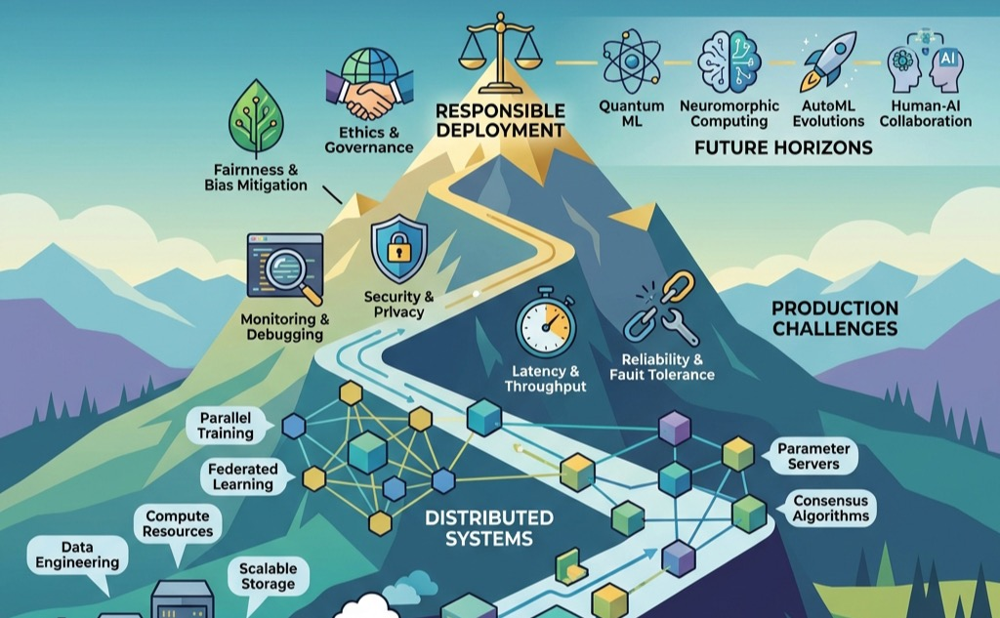

—
Conclusion

- Synthesize the six principles of distributed ML systems engineering that emerged from this textbook: communication dominance, routine failure, infrastructure determination, responsible engineering, sustainability constraints, and qualitative scale effects
- Evaluate the interconnections between infrastructure (Compute Infrastructure), distributed training (Distributed Training Systems), fault tolerance (Fault Tolerance and Reliability), and production operations (ML Operations at Scale) as components of an integrated system
- Apply systems thinking to design ML systems that scale horizontally, fail gracefully, and operate sustainably within resource and governance constraints
- Formulate professional strategies for engineering systems that serve humanity responsibly, integrating technical excellence with ethical commitment and environmental sustainability
The Fleet Stack provides the organizing framework for what follows: six principles, developed across every layer of the stack, integrate into a unified discipline for engineering intelligence at scale.
Systems Perspective 1.1: Connection: The Fleet Stack
Synthesizing Distributed ML Systems
Machine learning systems that operate beyond single machines face engineering challenges qualitatively different from those on a single node. The transition from single-node development to distributed production demands a fundamental shift in engineering methodology, and six principles define that shift.
Foundational ML engineering focuses on a single artifact: the weights of a neural network, optimized through training algorithms and architecture design on individual systems. Distributed ML engineering focuses on the infrastructure that enables that artifact to exist at scale: the datacenters, distributed protocols, and governance frameworks that transform a static model file into a living global service.
Assumptions that hold for individual systems break down at scale. New constraints emerge as dominant concerns, and the insights developed across these chapters converge into a unified understanding of ML systems engineering at production scale.
The textbook followed a deliberate structure reflecting the Fleet Stack. The Fleet chapters (Introduction, Compute Infrastructure, Network Fabrics, Data Storage) built the physical substrate: the silicon, the wires, and the storage that make distributed ML possible. The Distributed ML chapters (Distributed Training Systems, Collective Communication, Fault Tolerance and Reliability, Fleet Orchestration) established the logic of distribution: how to partition workloads, synchronize gradients, tolerate failures, and orchestrate resources across thousands of devices. The Deployment at Scale chapters (Inference at Scale, Performance Engineering, Edge Intelligence, ML Operations at Scale) carried the trained model from the cluster to the world. The Responsible Fleet chapters (Security & Privacy, Robust AI, Sustainable AI, Responsible Engineering) ensured that technical capability remains resilient, efficient, and aligned with human welfare.
The complete stack equips engineers to make informed decisions at every level, from algorithm selection through infrastructure design to governance frameworks.
Six Principles of Distributed ML Systems
Table 1 synthesizes the six principles that emerged from this textbook, each capturing a distinctive characteristic of distributed ML systems engineering.
These principles form a layered architecture that mirrors the Fleet Stack introduced in Part I, synthesized in Figure 1. At the physical foundation, infrastructure determines capability1 because hardware physics sets the hard limits. In the operational reality of the middle layers, communication dominates and failure is routine: these are the day-to-day dynamics of running distributed systems. At the governance layer, responsible engineering and sustainability provide normative constraints on what we should build, overriding what is merely possible. Emerging from this stack is the sixth principle: scale creates qualitative change.
1 The Silicon Contract: The implicit agreement between hardware and software: if the software provides a specific computation pattern (e.g., matrix-heavy, high arithmetic intensity), the hardware guarantees a specific performance level (\(R_{\text{peak}}\)). At fleet scale, this contract expands to include the Network Contract (bisection bandwidth) and the Power Contract (TDP), making systems engineering the art of honoring these physical agreements.
{kind=link}
Table 1 summarizes all six principles, their governing questions, and the chapters that develop each one.
| Principle | Core Question | Key Metric | Chapter Reference |
|---|---|---|---|
| 1. Communication Dominates | What is the bottleneck? | Network bandwidth utilization | Collective Communication |
| 2. Failure is Routine | How do we recover? | MTBF, checkpoint overhead | Fault Tolerance and Reliability |
| 3. Infrastructure Determines | What is possible? | FLOPS, memory bandwidth | Compute Infrastructure |
| 4. Responsible Engineering | Who is affected? | Fairness metrics, audit trails | Responsible Engineering |
| 5. Sustainability Constraints | What is the cost? | kWh/training, carbon footprint | Sustainable AI |
| 6. Scale Creates Change | What breaks at 1000x? | Scaling efficiency | Distributed Training Systems |
The first principle is the most fundamental: communication, not computation, dominates at scale (Dean et al. 2012). Training a large model across hundreds of GPUs spends more time synchronizing gradients than computing them. Production inference systems become latency-bound by tail effects,2 where the slowest worker determines response time regardless of how fast others complete.
2 Inference at Scale analyzes tail latency effects that dominate distributed inference: at the 99th percentile, a request touching 100 servers has a 63% chance of hitting at least one slow server.
3 Ring AllReduce, detailed in Collective Communication, achieves \(2(n-1)/n\) bandwidth utilization for \(n\) workers, enabling efficient gradient synchronization across large clusters.
4 Collective Communication explores gradient compression techniques that reduce communication volume 10-100\(\times\) through sparsification, quantization, and error feedback, enabling bandwidth-limited distributed and federated training.
Distributed Training Systems and Collective Communication develop this principle in detail, showing how Ring AllReduce,3 gradient compression,4 and overlapping computation with communication all address communication bottlenecks (Sergeev and Balso 2018). Standard datacenter networking proves insufficient for ML workloads, which is why purpose-built network architectures exist. Recognizing communication as the dominant constraint clarifies when algorithmic optimizations will help and when they merely shift work between equally constrained resources.
Communication systems, however, are only as valuable as they are reliable. Network failures, node crashes, and synchronization breakdowns introduce a second fundamental constraint that shapes distributed ML engineering.
The second principle follows directly: at distributed scale, component failures occur not occasionally but continuously. Meta’s experience training Llama 3 on 16,384 GPUs documented 419 unexpected failures over 54 days, averaging one failure every three hours (Grattafiori et al. 2024). Hardware failures, network partitions, and service disruptions are routine occurrences that systems must handle without human intervention.
5 Fault Tolerance and Reliability describes elastic training, which enables dynamic worker membership: jobs continue with remaining workers after failures and seamlessly incorporate new resources when available.
Fault Tolerance and Reliability establishes that architects must embed failure handling from the beginning. Checkpointing strategies balance recovery granularity against overhead. Elastic training5 dynamically adjusts to changing cluster membership, and graceful degradation maintains service quality as capacity diminishes. Systems that treat failure as exceptional do not survive production deployment.
Communication and failure together constitute the operational reality of distributed systems, the middle layer of the Fleet Stack. Both, however, ultimately depend on the physical foundation beneath them.
The third principle addresses the physical foundation. Compute Infrastructure demonstrates that infrastructure determines which workloads are possible, not just how fast they run. Organizations cannot access frontier capabilities without mastering the physical systems that make large-scale computation possible.
The Memory Wall makes this principle concrete: while compute (TFLOPS) is plentiful, memory bandwidth (GB/s) remains the gating constraint for the modern Decode Bottleneck. Inference at Scale and Sustainable AI quantify how the inability to move data fast enough from HBM to the processor makes autoregressive generation inherently inefficient. Mastering the fleet requires understanding these physical limits, from chip-level thermal density to cluster-wide bisection bandwidth.
Moving up the Fleet Stack from physical foundation to societal constraints, the fourth principle shifts from what we can build to what we should build. Responsible Engineering transforms abstract ethical principles into concrete engineering constraints (Amodei et al. 2016). Fairness, transparency, accountability, privacy, and safety are first-class requirements that shape system architecture throughout the ML lifecycle.
Bias baked into training data propagates through systems regardless of algorithmic sophistication. Engineers must design for fairness from inception, with monitoring infrastructure detecting degradation across demographic groups. The engineering methods for responsible AI, from bias detection to explainability mechanisms, carry the same weight as performance optimization.
Ethical considerations extend to environmental responsibility, the fifth principle. Sustainable AI reveals how the environmental impact of large-scale ML elevates resource efficiency to a primary engineering constraint (Strubell et al. 2019; Patterson et al. 2021). Training frontier models consumes electricity equivalent to powering thousands of homes, and computational demands grow exponentially faster than hardware efficiency improvements.
6 Sustainable AI introduces lifecycle assessment, which evaluates environmental impact across a system’s entire lifespan, including embodied carbon in hardware manufacturing (often 20–50% of total impact).
Sustainability thus transforms from environmental concern to engineering discipline. Energy costs can exceed model development budgets, thermal limits restrict hardware density, and power infrastructure requirements limit deployment locations. Carbon-aware scheduling, lifecycle assessment,6 and efficiency optimization become essential engineering competencies alongside traditional performance metrics.
The first five principles, from communication dominance through sustainability constraints, capture specific challenges of distributed ML. They converge, however, on a final insight that unifies them: scale transforms these challenges qualitatively rather than merely amplifying them.
The sixth principle captures this insight directly: systems that work at modest scale exhibit fundamentally different behaviors at production scale. A training job running on 8 GPUs may encounter communication bottlenecks, load imbalance, or synchronization overhead when scaled to 8,000 GPUs that did not manifest at smaller scale. With 100,000 concurrent user sessions, edge cases that occur one in a million times happen hundreds of times daily.
Scale is why distributed ML requires fundamentally different engineering approaches. The techniques that optimize single-machine performance, while necessary, prove insufficient. New phenomena emerge: stragglers7 that bottleneck clusters, network partitions that split training, and heterogeneity across hardware generations that complicates load balancing.
7 Stragglers, examined in Fault Tolerance and Reliability, are workers completing tasks slower than peers that bottleneck synchronous training: a single straggler at 80% speed reduces cluster throughput by 20%.
The Complete Production System
In production, no principle exists in isolation. The Fleet Stack introduced earlier reveals itself as a stack of interdependencies: physical foundations constrain operational possibilities, which in turn must satisfy governance requirements.
The chapters of this textbook collectively describe a production ML system as an integrated whole. Each principle creates requirements and constraints that ripple through the entire stack, and these principles sometimes conflict. Communication optimization may require synchronization patterns that increase failure exposure. Sustainability constraints may limit infrastructure choices that would maximize raw performance. Responsible AI requirements may add latency that strains communication budgets. Navigating these tensions defines the art of distributed ML engineering: the engineer must find designs that balance all six principles within acceptable trade-offs.
Compute Infrastructure provides the foundation: carefully designed power, cooling, and networking systems aggregate computational resources into accelerator clusters connected by high-bandwidth, low-latency networks. Without appropriate infrastructure, the distributed techniques explored throughout this textbook cannot achieve their potential.
Storage and communication jointly enable distribution. Data Storage addresses the capacity and bandwidth requirements for serving training data at rates matching accelerator throughput, while Collective Communication connects distributed workers through collective operations that synchronize computation. These subsystems must be co-designed: storage bandwidth that exceeds communication capacity wastes resources, and communication paths that exceed storage throughput leave accelerators idle.
Distributed Training Systems converts clusters into systems capable of training models that exceed single-device capabilities, combining data parallelism, model parallelism, and pipeline parallelism to address different constraints. Hybrid strategies assemble these approaches for large language models and recommendation systems.
Models create value only when they serve predictions. Inference at Scale addresses the transition from training to production serving, Performance Engineering optimizes training and inference efficiency, and ML Operations at Scale enables systems to evolve as distributions shift and requirements change. Security & Privacy protects against threats unique to ML systems, Edge Intelligence addresses the distributed trust challenges of federated deployments, and Responsible Engineering and Sustainable AI ensure that capability serves human welfare.
Competencies Mastered
The journey through this textbook builds a complete engineering skill set, from training a model on a single machine to governing a global-scale service.
The first competency is distributed systems. An engineer who has mastered this material can orchestrate training at scales that exceed any single machine’s memory or compute, analyze communication patterns (recognizing that ring AllReduce achieves \(2(n-1)/n\) bandwidth utilization as cluster size grows), select network architectures appropriate to workload requirements, and design for routine failure by expecting component failures every few hours rather than every few months.
The second competency is production operations. The serving tax, the nuances of continuous batching, and the critical importance of monitoring for both performance and semantic drift are all within scope.
The third competency spans governance and ethics at the highest level of the Fleet Stack. Fairness, privacy, and sustainability are primary engineering constraints, and the ability to implement differential privacy, audit for bias, and schedule workloads for carbon efficiency distinguishes a systems engineer from a model developer.
The Path Forward
These competencies address today’s challenges. Mastery of current systems, however, is only valuable when paired with the ability to adapt as the landscape shifts. We stand at the end of the Era of Scaling, where progress came from making models bigger, and at the beginning of the Era of Composition. This transition gives rise to what we term the compound capability law.
Systems Perspective 1.2: Compound Capability Law
The Principle: > When individual model scaling saturates, system capability scales with the complexity of orchestration.
The Implication: The future belongs to Compound AI Systems: architectures that combine multiple specialized models, retrieval systems, and reasoning agents into a coherent whole. The “unit of compute” is no longer a FLOP; it is a Reasoning Chain. \[ \text{Capability} \propto \text{Model}_{IQ} \times (\text{Tools} + \text{Context} + \text{Planning})^N \] The next breakthrough will not be a larger GPU; it will be a smarter System Architecture.
Napkin Math 1.1: Projecting the 100x Fleet
The Math: Total system gain is the product of improvements across the Fleet Stack.
- Hardware (Physics): 4.0x (Moore’s Law tail-end).
- Algorithm (Math): 2.5x (Sparsity & Distillation).
- Orchestration (Systems): 100x / (4.0 \(\times\) 2.5) = 10x.
The Systems Insight: Because silicon and math are hitting diminishing returns, the bulk of future scaling (10x) must come from System Orchestration. This means moving from monolithic models to Compound AI Systems that use reasoning loops, tool-use, and dynamic retrieval to achieve 10\(\times\) more utility from the same number of FLOPS. The future of AI is not in the model weights; it is in the Fleet Logic.
The era of the Compound AI System is already here. Intelligence emerges from the orchestration of specialized agents (reasoning, retrieval, and action) coordinated through the MLOps pipelines established in ML Operations at Scale. The Orchestration Layer becomes the new “CPU,” scheduling cognitive tasks across a fleet of specialized models just as an OS schedules threads across cores, precisely the kind of fleet orchestration studied in Fleet Orchestration.
As silicon approaches its atomic limits, the next decade points toward Post-Silicon Frontiers. Technologies such as High Bandwidth Flash (HBF), 3D logic-stacking, and novel computing substrates will redefine the physics of the fleet. The principles developed in this textbook (bandwidth optimization, fault tolerance, and responsible governance) will remain the enduring requirements for these new substrates.
Napkin Math 1.2: The Physics of the Next 1000x
The Math: The next leap in scale requires moving from electrical to optical signaling.
- Electrical Cost: 10.0 pJ/bit.
- Optical Target: 0.01 pJ/bit.
- Efficiency Gain: 1,000\(\times\).
The Systems Insight: We cannot scale further by doing “more of the same.” To break the Energy Wall, we must change the Physics of Communication. A 1,000\(\times\) reduction in data movement energy is the only way to support models that are 1,000\(\times\) larger without consuming the entire output of the global power grid. In the Machine Learning Fleet, the principles of Data Locality and Interconnect Efficiency are thermodynamic requirements for the next era of intelligence, not optional optimizations.
As ML systems grow in capability and consequence, the distance between technical decisions and human outcomes shrinks to zero. The ultimate “System-Data Duality” holds: we build the system, and the system builds us.
Engineering Intelligence at Scale
The scale of modern ML infrastructure invites comparison with the most efficient computing system we know: the human brain. The following exercise provides a Fermi estimate of how our largest clusters compare.
Napkin Math 1.3: The Fermi Estimate of Intelligence
The Machine (GPT-4 Scale Cluster):
- Cluster: 25,000 H100 GPUs.
- Ops/sec: \(25,000 \times 1,000 \text{ TFLOPS} =\) 2.5 \\\\times 10^{19} FLOPs.
- Power: \(25,000 \times 700\text{W} \approx\) 17.5 MW.
The Brain:
- Synapses: \(10^{14}\) synapses (connections).
- Firing Rate: \(\approx 100 \text{ Hz}\) (average spike rate).
- Ops/sec: \(10^{14} \times 100 =\) 10^{16} Synaptic Ops/sec.
The Systems Conclusion:
- Raw Throughput: The machine is now 2,472\(\times\) faster (2.5 \\\\times 10^{19} vs 10^{16}) at raw math.
- Efficiency: The brain is 354\(\times\) more efficient (\(20\text{W}\) vs 17.5 MW).
We have conquered Scale. The challenge for the next generation is Efficiency.
The Fleet Stack is now a professional framework. It spans the Infrastructure that powers the fleet (Part I), the Distribution of work across thousands of devices (Part II), the global Service that delivers intelligence to the world (Part III), and the Governance mandates that ensure the fleet serves humanity well (Part IV).
The intelligent systems that will define this century need engineers who understand these principles and can apply them at scale.
Build systems that scale. Build systems that endure. Build systems that serve humanity well.
Prof. Vijay Janapa Reddi, Harvard University
The essential insights from this textbook are:
Key Takeaways
- Six principles define distributed ML systems engineering: communication dominance, routine failure, infrastructure determination, responsible engineering, sustainability constraints, and qualitative scale effects.
- The transition from single-machine to distributed systems is qualitative rather than quantitative. New phenomena emerge at scale that require distinct engineering approaches.
- Production ML systems integrate infrastructure, distributed training, fault tolerance, operations, security, and governance as an interconnected whole where no component operates in isolation.
- The engineering decisions made in building ML systems carry ethical weight extending far beyond technical metrics, affecting billions of lives through recommendation systems, medical AI, climate models, and accessibility tools.